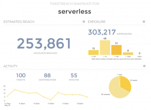
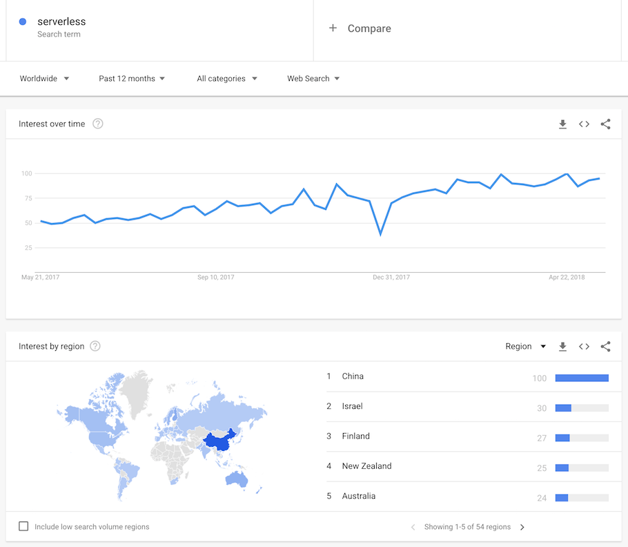

Serverless 对商业、流程及文化的影响
这篇文章是Serverless系列的第二篇文章，这一系列文章是为了探索Serverless的本质。
越来越多的企业与创业公司选择Serverless技术，并且Serverless技术发展速度远远快于之前的Container技术，而Container技术则是最近一次被行业广泛采用的新技术。
不论从何种维度分析，都可以看到Serverless这项技术正引起人们的兴趣。

- ServerlessConf以及ServerlssDays这两个活动的参与人和演讲人数量和范围一直在增长扩大。
- Developer Economics最新的季度调查[1]表明，19%的后台人员正在使用Serverless平台，这个数据已经接近于使用虚拟机的人数了。而在6个月前，这个数字还只是16%。
- Cloudability的2018年度云状态报告（State of the Cloud 2018 Report[2]）中分析了1500个组织的IT支出，结果显示Serverless的环比增长率为 667%。
- TweetReach 估计每小时都有100条左右的推文被标记成serverless
- 谷歌搜索显示serverless的搜索量在最近12月内稳步增长。

目前只有一些创业公司会在全面使用Serverless，大部分的企业只会在一些特定的项目中采用Serverless技术来测试基础架构的方案，以及测试团队文化是否适合实施Serverless。
尽管Serverless技术只被用于一些独立的项目上进行测试，它们仍引起了多米诺骨牌效应，以一种意想不到的方式影响了公司业务。Serverless缩短了生产时间，引入了cost-for-usage（根据使用量付费）模型并鼓励团队成员更加自主。这些改变影响了企业的运作方式，包括如何选择需要在Serverless上运行的功能，企业研发新产品新功能的意愿，以及如何管理预算，程序员与产品经理如何履行职责等等。
Serverless和微服务
O’Reilly系列的Microservices Architecture（微服务架构）书中提到 “微服务架构使Serverless更加快速，微服务使一个单体应用代码被拆分成小型的自治服务。因此，企业可以大规模的快速安全的构建解决方案”。
今年年初的一篇博客中[3]，机器学习平台Algorithmia的Mike Anderson演示了一个典型的高科技公司通过微服务将标准发布周期从65天缩短至16天。他写道“微服务帮助他们解耦了开发流程中的阻塞部分，缕清以及隔离了问题，使他们只关注组件级别的变化。”
当一个组织的代码是以微服务而不是单体应用的形式组织的时候，才可能使用Serverless技术。现在，企业可以识别出适合在Serverless架构运行的任务，这些任务是一些特定的，无状态的任务。云平台会通过分配计算资源来解决问题，运行服务器来做计算，在数据转换完成后将这些操作任务关闭。
Red Hat产品管理部门的高级主管Rich Sharples 说道，该公司在过去两三年一直关注Serverless技术并且正在开发一个开源的，企业级别的Serverless产品，这个产品可以与Kubernetes一起使用。Red Hat希望今年能够发布整个产品。
Sharples说道“通过客户，我们发现技术的技术成熟度曲线（ The Hyper Curve）飙升的十分迅速，例如微服务，而Serverless攀升的速度更快”
因为微服务的增量交付，灵活，快速交付的特点，微服务收到越来越多企业的欢迎，Sharples说道“但是在我看来，这些使用者在疲于应对分布式系统管理和监控的运维复杂性，这也是为什么Serverless会引起他们的兴趣，通过Serverless，你可以获得微服务的好处，从开发人员角度来看，这也非常简单——仅仅只用修改一些代码。在运维人员看来，Serverless是一种非常适合建立自动化运维系统的模型，例如将回复一个日志事件实现成Serverless方法调用将会非常方便“。Sharples说道从他与企业级用户的日常对话中，可以感受到他们对Serverless的兴趣。
Sharples说道“任何短时间运行的，无状态的，可以独立运行的任务都适用于Serverless”。
开源软件API Gateway Kong的高级解决方案工程师Aaron Miler说道，大部分开始设计Serverless架构的客户基本都采用了自下而上，或者自上而下的方案。使用自下而上方案的客户已经将他们的传统架构转换成微服务架构，并且正在寻找一种方案可以让他们在整个企业以不同方式使用Kong。他们倾向于选择开源技术公司的企业级方案，并且希望通过发掘Serverless方向的工作机会来进入一个新的领域。
Miller说道：“在Kong，的确有一些优秀的Serverless项目引起了那些想要快速跟进新技术的CTO的关注。Expedia的Serverless项目就采用了Kong的技术，Expedia是Serverless的深度用户，这家公司在他们所有日常的API网关都使用了Kong，因为Kong提供了AWS Lamda插件，通过插件，Expedia可以很方便的使用AWS Lamda，例如，每当用户在Expedia上订了一间房或是一张机票时，Expedia都会为客户提供一个可以用于下次消费的折扣券。Serverless技术非常适用于这种场景。”
Miller谈到，虽然减少成本是Serverless的一大优势，但是它更大的优势在于加快了开发速度。“如果团队只用专注于写代码，只用关心函数功能的质量，不用担心这些代码是在Linux哪个版本上运行，这些问题将由别人解决，而团队只用关心如何用Node、Python或是其他Serverless语言写代码，这样一来，每个人都从中收益。它可以让人更加专注于自己的事情同时交付更多的功能。”
哪些功能应该运行在Serverless上呢？
许多企业和创业公司都找一个简单的例子来测试Serverless的潜力。The New Stack会定期列举一些简单事件作为Serverless用例（ a number of the low-hanging fruit use cases for serverless[4]）。
- 调整图片大小（或是任何一个需要清理或者操作媒体文件的任务）
- 需要清理非结构化数据或是将数据转换成某种标准格式的ETL任务
- 克朗型作业（一种自动化的定期运行的任务）
Steve Faulkner曾经帮助媒体公司Bustle公司构建Serverless基础架构，该公司现在所有的运维都在Serverless的架构上运行，只有一个兼职的运维员工， Steve有一个简单的经验法则来帮助企业找到从哪可以开始他们的Serverless旅程。
他问到 “你的CI/CD流水线有哪些缺陷？一个测试你的CI/CD流水线的简单方法：一个非技术人员是否可以对您的网站或文档中的文本或副本进行更改？将更改部署到生产的速度有多快？大多数公司甚至不能这样做。”
Faulkner说道，他见过有个CEO看到网站上有个错别字，改正后通过Git中提交，一小时内更改就在生产中生效了。“这是一个很高的标准，但是这对于找到你的CI/CD的缺陷是一个很好的测试，并且这也是一个Serverless解决问题的案例”。
Kong公司的Miller提出了一种适合使用Serverless的场景，当某个处理任务所需的资源是不可预估的时候，这个任务就很适合使用Serverless。“在任何你不确定计算容量的地方：比如你不确定使用1还是100台服务器，如果没有方式可以预估，那么这个任务就很适合用Serverless处理”。另一种情况则是当你有很高很多的需求，但是预算又非常紧张的时候，Serverless可以帮助你很好的控制成本。
就像是Expedia的用例一样，他也建议技术领导与产品经理以及销售和营销团队一起讨论企业当前如何提高用户的粘性，在此之中或许可以发现一些合适的用例。
这通常是James Beswick的起点，该公司的Indevelo开发商店为用户创建网页和移动应用程序，他们的企业和B2B客户端都是Serverless架构。最初，Beswick在所有标准图像大小调整类型任务中使用Serverless，但在纽约最近一个ServerlessConf中，“我突然意识到我可以将所有的工作都放在无服务器上，”他说。
Beswick说，每次跟新客户讨论时，他通常不会从一开始就讨论Serverless，而是把低廉的使用成本作为他的主要卖点。
“我们必须解释整个事情，”Beswick说。 “首先我们谈论软件需求是什么，然后谈论架构。在架构方面，我们从财务方面入手。我们解释了为什么Serverless更便宜，更易用。”
Beswick说，因为Serverless价格“非常难以估计”，他倾向于给潜在客户一个估价范围。 “网络规模的应用程序非常昂贵，但是你得运行它们”Beswick说。我倾向于表明，如果某个应用程序正在进行10,000次交易，那么每月帐户看起来如何？如果一个事件每个月花费500美元，那么什么可能会导致它突然每月花费5000美元？”
Serverless如何改变业务的？
从成本的角度出发，促使企业思考Serverless架构可能会对他们未来运行公司的方式产生巨大的影响。
例如，在美国，IT项目可能会根据人力资源和资本支出（capX）进行预算，而不是纯粹的成本分配和运营支出（opX）。许多企业将其IT视为capX，因此获得特定的税收折扣。但是对于云环境，对于Serverless的情况更是如此，其中定价是基于实际使用情况，它全部是opX。这让一些首席财务官感到担忧，他们害怕失去IT项目的税务减免。在进行项目预算时，其他的项目并没有设置成可以降低现有员工的工资成本。
“你可能会为一名数据库员工每年支付12万美元，”Beswick解释说。 “如果您正在运行AWS Aurora，那可能会花费500美元一个月，这要便宜得多，但人们并没有考虑到人员成本，因为它被分成了多个部分。“Beswick说，企业将不得不推出新的会计方法，这不是寻求CapX税务减免，而是一种纯粹的成本分配，人力资源预算将会采用新的方式，而将运维成本划分到项目成本之中。
Serverless的引入也带来了其他的影响。其中一些影响在云技术和SaaS技术中产生，但随着Sevrerless应用的发展，它影响的速度和范围也在增加。
Beswick指出，他的设计店经常被IT以外的业务部门雇用，例如企业的营销和销售团队。例如，SaaS工具只被一个部门使用，但随后数据集成和移动设备集成则意味着跨越多个业务线，应用程序开发必须找到解决方法来限制传统IT部门的参与。 “当你与IT部门合作时，有一系列因素在起作用：他们不在权威，他们对发生的事故感到不满，并且怀疑它是否应该在Serverless中运行。 IT团队在这方面如此落后，“Beswick警告说。
“IT部门正在变懒，他们掉入了不想改变任何事物的陷阱之中。但大多数企业都看到自身行业发生的巨大变化，所以他们不想再依赖IT部门，而是从外部寻求问题的解决方案，”Beswick认为，大多数企业都在处于一个中间过渡时期，新的组织架构会代替传统IT部门的组织结构和作用，而Serverless正在加速这个过程。
Serverless正在改变流程
Faulkner说道：“我确实看到了Serverless带来的业务流程的变化。 我认为Serverless不仅仅提高了软件开发的速度，还帮助你模块化你的应用程序。 我们通过Serverless的方式重新构建了Bustle。 Serverless架构是模块化的，并且具有许多功能，因此更容易与其他的应用适配。 在去年，我们开始建立可以搭载事件的架构并提供新价值的业务系统。”
Beswick也同意这个观点。 “想想以前的世界，MVP（Minimum Viable products 最小可行性产品）是不可扩展的，它们并不可靠。 如果想法真正被采用并进入生产阶段，那么MVP的大部分工作将被丢弃。 但是现在有了Serverless之后，我们可以轻易的将MVP投入生产来构建高级应用程序，从而解决问题，它变得更灵活。 以前当一个功能或应用规模扩大时，你只能默默祈祷不要发生问题，而现在Serverless使规模缩放变得更稳定。”
Beswick说，通过微服务和Functions，构建MVP所需的很多代码块都已经实现。 通过Serverless（根据使用量付费），企业可以加快开发速度，快速向客户群体发布原型以获得反馈，从而降低风险。 如果他们成功了，他们可以更快地转向生产，而无需重建整个应用。
保险科技创业公司Fabric的联合创始人兼首席技术官Steven Surgnier表示，在他们的业务中使用Serverless架构的确为该公司带来了的业务流程的优势，正如Faulkner和Beswick之前所提到的一样。
“最终都归结于执行力，”Surgnier说。 “作为一家早期的创业公司，我们希望迅速执行并最大限度地降低整体技术的复杂性。 我们使用Serverless技术来减少从我们的想法到客户手中的最终产品的时间。”
Miller和Surgnier都赞同一种观点，即Serverless技术帮助企业留住关键开发人员。 Miller说，企业内部的开发团队通常对测试新技术感兴趣，他们会找到一个项目，分配一个小团队，并给他们几个星期来建立一个原型。 “这些企业通过为开发人员提供有趣的工作来吸引和留住优秀的人才，”Miller解释说。 Surgnier说Serverless对公司和工程师都有好处：“工程师喜欢创造。 因此，通过为他们提供Serverless基础架构和专注于产品的机会，可以让工程师在其职业生涯中创造出更多的产品。”
Serverless是如何改变企业文化的？
Steve Faulkner说Serverless改变了软件开发的基本流程，在这个过程中培养企业内部的开发人员自主性。
作为Bustle的Serverless的冠军，他花费大部分时间来维护第一批bash脚本，并在之后构建了一个十分成熟的框架。 “我希望人们了解它是如何工作的，但我也坚信任何人都可以随时用一个命令部署生产环境，”他说。
Serverless鼓励这种程序员自主开发的文化。 “如果有的话，一切都会更快，”福克纳说。 “一个完全部署的Lambda的更改可以在30秒内完成。 如果你知道部署到生产需要一些过程，那么它会成为一种精神障碍，并会引入惰性，就像是我现在应该做么？还是我应该等待别人去做这件事？Serverless帮助开发者解除了这种精神障碍。 现在任何人都可以随时部署到任何生产端点，这就会给赋予人们自主权和能力。”
Faulkner说，在Bustle，这已经是文化的一部分，而大公司可能有一种根深蒂固的文化和观念，即鼓励开发者们在签字（上级认可）后才开始做事。 “我想如果你在大企业中使用Serverless，如果文化已经很糟糕，Serverless也无法帮助到你。”
Faulkner表示，Serverless也加速改变了另一种文化，即对轻量级架构决策记录的需求。 “人们需要记录他们正在做的事情，”他急忙说道。 “如果我们的目标是任何时候任何人都可以部署到生产，我们必然会有很多短暂存在的feature branch（Git的功能分支）。那么你需要一个功能标记系统，这样生产中的东西就不会完全暴露给外界。“尽管Faulkner表示这还不是规范，并且是分布式软件应用有着更广泛的趋势，这种议程和需求是由影响无服务器的采用创造了速度和发布生产级变更的能力。
“我最近的观点是，随着应用规模不断扩大，功能标志（feature flag）可能是改善软件开发过程最有用的方法。”Faulkner建议道。
Serverless将会成为行业的兴奋剂
Indevelo的Beswick认为，在许多企业，IT主管和业务部门经理会对未来的发展存在分歧。 云技术已经引入了新的领域，但Serverless的出现则向前推进了更大的一步。
“我从未像现在这样对一项技术感到如此兴奋，”Beswick说道，Faulkner，Surgnier，Miller和Sharples都表达了同样的观点。 “Serverless使所有事物汇集于一处，”Beswick继续说道。 “Serverless能交付的远超想象， 以后可以将它添加到机器学习，也可以被应用于移动方向。 你需要以一种全新的思维方式去思考，而不是继续维持老旧的思想，这才是Serverless令人兴奋的地方。 我们可以更好地去询问客户的问题，以及如何让每个人更容易解决这些问题。”
译者：Grace Linktime Cloud公司全栈工程师
原文链接：https://thenewstack.io/serverless-impacts-on-business-process-and-culture/
相关链接：
- https://www.developereconomics.com/reports/developer-economics-state-of-the-developer-nation-14th-edition
- http://get.cloudability.com/ebook-state-of-cloud-2018-thank-you.html?aliId=3136040
- https://blog.algorithmia.com/introduction-to-serverless-microservices/
- https://thenewstack.io/serverless-architecture-five-design-patterns/